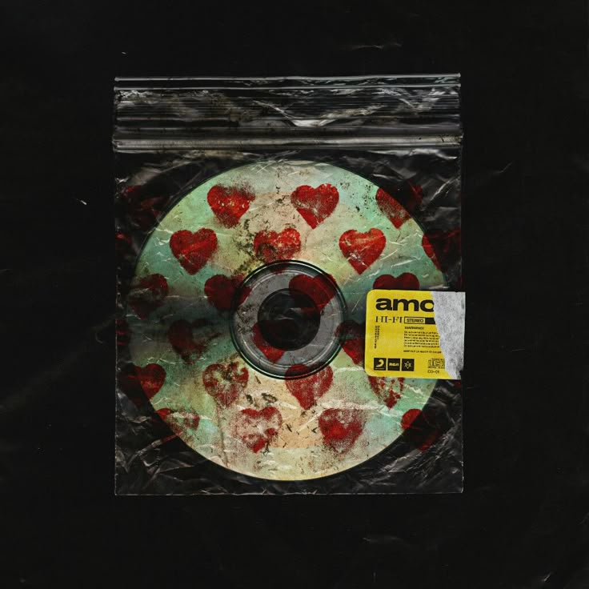

BRING ME THE HORIZON
MUSIC PLAYER

Shadow Moses
Bring Me The Horizon - Sempiternal (2013)

MANTRA
Bring Me The Horizon - MANTRA (2019)

Kingslayer
Bring Me The Horizon - Post Human (2020)

Happy Song
Bring Me The Horizon - That's The Spirit (2015)